에너지관리산업기사 (2020-06-06 기출문제)
1과목: 열역학 및 연소관리
1. Nm3의 혼합가스를 6Nm3의 공기로 연소시킨다면 공기비는 얼마인가? (단, 이 기체의 체적비는 CH4=45%, H2=30%, CO2=10%, O2=8%, N2=7%이다.)
- 1.2
- 1.3
- 1.4
- 3.0
(정답률: 59%)

2. 보일의 법칙을 나타내는 식으로 옳은 것은? (단, C는 일정한 상수이고 P, V, T는 각각 압력, 체적, 온도를 나타낸다.)
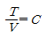
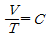
- PV=C
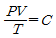
(정답률: 82%)
3. 어떤 계 내에 이상기체가 초기 상태 75kPa, 50℃인 조건에서 5kg이 들어있다. 이 기체를 일정 압력 하에서 부피가 2배가 될 때까지 팽창시킨 다음, 일정 부피에서 압력이 2배가 될 때까지 가열하였다면 전 과정에서 이 기체에 전달된 전열량(kJ)은? (단, 이 기체의 기체상수는 0.35kJ/kg·K, 정압비열은 0.75 kJ/kg·K이다.)
- 565
- 1210
- 1290
- 2503
(정답률: 46%)
4. 증기의 특성에 대한 설명 중 틀린 것은?
- 습증기를 단열압축시키면 압력과 온도가 올라가 과열 증기가 된다.
- 증기의 압력이 높아지면 포화 온도가 낮아진다.
- 증기의 압력이 높아지면 증발잠열이 감소된다.
- 증기의 압력이 높아지면 포화증기의 비체적(m3/kg)이 작아진다.
(정답률: 62%)
5. 공기 과잉계수(공기비)를 옳게 나타낸 것은?
- 실제연소 공기량 ÷ 이론공기량
- 이론공기량 ÷ 실제연소 공기량
- 실제연소 공기량 - 이론공기량
- 공급공기량 – 이론공기량
(정답률: 83%)
6. 이상적인 공기압축 냉동사이클에 대한 설명 중 옳지 않은 것은?
- 팽창과정은 단열상태에서 일어나며, 대부분 등엔트로피 팽창을 한다.
- 압축과정에서는 기체상태의 냉매가 단열압축되어 고온고압의 상태가 된다.
- 응축과정에서는 냉매의 압력이 일정하며 주위로의 열전달을 통해 냉매가 포화액으로 변한다.
- 증발과정에서는 일정한 압력상태에서 저온부로부터 열을 공급받아 냉매가 증발한다.
(정답률: 65%)
7. 중유는 A, B, C급으로 분류한다. 이는 무엇을 기준으로 분류하는가?
- 인화점
- 발열량
- 점도
- 황분
(정답률: 85%)
8. 체적 20m3의 용기 내에 공기가 채워져 있으며, 이때 온도는 25℃이고, 압력은 200kPa이다. 용기 내의 공기온도를 65℃까지 가열시키는 경우에 소요 열량은 약 몇 kJ인가? (단, 기체상수는 0.287kJ/kg·K, 정적비열은 0.71kJ/kg·K이다.)
- 240
- 330
- 1330
- 2840
(정답률: 52%)
9. 15℃의 물 1kg을 100℃의 포화수로 변화시킬 때 엔트로피 변화량(kJ/K)은? (단, 물의 평균 비열은 4.2kJ/kg·K이다.)
- 1.1
- 6.7
- 8.0
- 85.0
(정답률: 60%)
10. 액체 및 고체연료와 비교한 기체연료의 일반적인 특징에 대한 설명으로 틀린 것은?
- 점화 및 소화가 간단하다.
- 연소 시 재가 없고, 연소효율도 높다.
- 가스가 누출되면 폭발의 위험성이 있다.
- 저장이 용이하며, 취급에 주의를 요하지 않는다.
(정답률: 89%)
11. 다음 중 열량의 단위에 해당하지 않는 것은?
- PS
- kcal
- BTU
- kJ
(정답률: 78%)
12. 오일의 점도가 높아도 비교적 무화가 잘 되고 버너의 방식이 외부혼합형과 내부혼합형이 있는 것은?
- 저압기류식 버너
- 고압기류식 버너
- 회전분무식 버너
- 유압분무식 버너
(정답률: 70%)
13. 자연통풍에 있어서 연도 가스의 온도가 높아졌을 경우 통풍력은?
- 변하지 않는다.
- 감소한다.
- 증가한다.
- 증가하다가 감소한다.
(정답률: 79%)
14. 다음 연료의 구비조건 중 적당하지 않는 것은?
- 구입이 용이해야 한다.
- 연소 시 발열량이 낮아야 한다.
- 수송이나 취급 등이 간편해야 한다.
- 단위 용적당 발열량이 높아야 한다.
(정답률: 85%)
15. 공기표준 브레이튼 사이클에 대한 설명으로 틀린 것은?
- 등엔트로피 과정과 정압과정으로 이루어진다.
- 작동유체가 기체이다.
- 효율은 압력비와 비열비에 의해 결정된다.
- 냉동사이클의 일종이다.
(정답률: 71%)
16. 연소할 때 유효하게 자유로이 연소할 수 있는 수소, 즉 유효수소량(kg)을 구하는 식으로 옳은 것은? (단, H는 연료 속의 수소량(kg)이고, O는 연료 속에 포함된 산소량(kg)이다.)
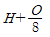
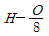
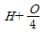
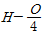
(정답률: 81%)
17. 연료비가 증가할 때 일어나는 현상이 아닌 것은?
- 착화온도 상승
- 자연발화 방지
- 연소속도 증가
- 고정탄소량 증가
(정답률: 59%)
18. 다음 중 이상기체의 등온과정에 대하여 항상 성립하는 것은? (단, W는 일, Q는 열, U는 내부에너지를 나타낸다.)
- W=0
- Q=0
- |Q|≠|W|
- △U=0
(정답률: 83%)
19. 건도를 x라고 할 때 건포화증기일 경우 x의 값을 올바르게 나타낸 것은?
- x=0
- x=1
- x＜0
- 0＜x＜1
(정답률: 71%)
20. LPG의 특징에 대한 설명으로 틀린 것은?
- 무색 투명하다.
- C3H8와 C4H10가 주성분이다.
- 상온·상압에서 공기보다 무겁다.
- 상온·상압에서 액체로 존재한다.
(정답률: 82%)
2과목: 계측 및 에너지진단
21. 보일러의 증발량이 5t/h 이고 보일러 본체의 전열 면적이 25m2일 때 이 보일러의 전열면 증발률(kg/m2·h)은?
- 75
- 150
- 175
- 200
(정답률: 58%)
22. 자동제어시스템의 종류 중 자동제어계의 시간응답특성에 대한 설명으로 틀린 것은?
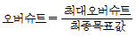
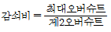
- 지연시간 = 응답이 최초로 목표값의 50%가 되는데 요하는 시간
- 상승시간 = 목표값의 10%에서 90%까지 도달하는데 요하는 시간
(정답률: 74%)
23. 보일러의 증발능력을 표준상태와 비교하여 표시한 값은?
- 증발배수
- 증발효율
- 증발계수
- 증발률
(정답률: 69%)
24. 다음 중 1N에 대한 설명으로 옳은 것은?
- 질량 1kg의 물체에 가속도 1m/s2이 작용하여 생기게 하는 힘이다.
- 질량 1kg의 물체에 가속도 1cm/s2이 작용하여 생기게 하는 힘이다.
- 면적 1cm2에 1kg의 무게가 작용할 때의 응력이다.
- 면적 1cm2에 1g의 무게가 작용할 때의 응력이다.
(정답률: 81%)
25. 다음 중 유량의 단위로 옳은 것은?
- kg/m2
- kg/m3
- m3/s
- m3/kg
(정답률: 70%)
26. 탄성식 압력계가 아닌 것은?
- 부르동관 압력계
- 다이어프램 압력계
- 벨로우즈 압력계
- 환상천평식 압력계
(정답률: 86%)
27. 측정 대상과 같은 종류이며 크기 조정이 가능한 기준량을 준비하여 기준량을 측정량에 평행시켜 계측기의 지시가 0위치를 나타낼 떄의 기준량의 크기를 측정하는 방법이 있다. 정밀도가 좋은 이러한 측정 방법은 무엇인가?
- 편위법
- 영위법
- 보상법
- 치환법
(정답률: 79%)
28. 다음 중 잔류편차(offset)가 발생되는 결점을 제거하기 위한 제어동작으로 가장 적합한 것은?
- 비례동작
- 미분동작
- 적분동작
- on-off 동작
(정답률: 70%)
29. 다음 측정방식 중 물리적 가스분석계가 아닌 것은?
- 밀도식
- 세라미식
- 오르자트식
- 기체크로마토그래피
(정답률: 65%)
30. 보일러의 열효율 향상 대책이 아닌 것은?
- 피열물을 가열한 후 불연소시킨다.
- 연소장치에 맞는 연료를 사용한다.
- 운전조건을 양효하게 한다.
- 연소실내의 온도를 높인다.
(정답률: 80%)
31. 운전 조건에 따른 보일러 효율에 대한 설명으로 틀린 것은?
- 전부하 운전에 비하여 부분부하 운전 시 효율이 좋다.
- 전부하 운전에 비하여 과부하 운전시에서는 효율이 낮아진다.
- 보일러의 배기가스온도가 높아지면 열손실이 커진다.
- 보일러의 운전효율을 최대로 유지하려면 효율-부하곡선이 평탄한 것이 좋다.
(정답률: 78%)
32. 보일러 수위 제어용으로 액면에서 부자가 상하로 움직이며 수위를 측정하는 방식은?
- 직관식
- 플로트식
- 압력식
- 방사선식
(정답률: 85%)
33. 열전대를 보호하기 위하여 사용되는 보호관 중 내식성, 내열성, 기계적 강도가 크고 황을 함유한 산화염에서도 사용할 수 있는 것은?
- 황동관
- 자기관
- 카보랜던관
- 내열강관
(정답률: 71%)
34. 아래 그림과 같은 경사관식 압력계에서 압력 P1과 P2의 압력차는 몇 kPa인가? (단, θ=30°, x=100cm, 액체의 비중량은 8820N/m3이다.)
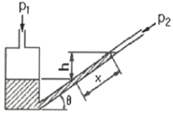
- 4.4
- 44
- 8.8
- 88
(정답률: 61%)
35. 열전대 온도계의 원리를 설명한 것으로 옳은 것은?
- 두 종류 금속선의 온도차에 따른 열기전력을 이용한다.
- 기체, 액체, 고체의 열전달계수를 이용한다.
- 금속판의 열팽창 계수를 이용한다.
- 금속의 전기저항에 따른 온도계수를 이용한다.
(정답률: 81%)
36. 광고온계의 특징에 대한 설명으로 틀린 것은?
- 구조가 간단하고 휴대가 편리하다.
- 개인에 따라 오차가 적다.
- 연속 측정이나 제어에는 이용할 수 없다.
- 고온측정에 적합하다.
(정답률: 62%)
37. 차압식 유량계로만 나열한 것은?
- 로터리 팬, 피스톤형 유량계, 칼만식 유량계
- 칼만식 유량계, 델타 유량계, 스와르 미터
- 전자유량계, 토마스 미터, 오벌 유량계
- 오리피스, 벤투리, 플로-노즐
(정답률: 86%)
38. 발생 원인이 운동부분의 마찰, 전기저항의 변화 및 불규칙적으로 변화하는 온도, 기압, 조명 등에 의해서 발생되는 오차는?
- 과실 오차
- 우연 오차
- 고유 오차
- 계기 오차
(정답률: 75%)
39. 보일러의 온도를 60℃로 일정하게 유지시키기 위해서 연료량을 연료공급 밸브로 변화 시킬 때 다음 중 틀린 것은?
- 목표량: 60℃
- 제어량: 온도
- 조작량: 연료량
- 제어장치: 보일러
(정답률: 73%)
40. 스테판 볼츠만 법칙을 응용한 온도계로 높은 온도 및 이동물체의 온도 측정에 적합한 온도계는?
- 광고온계
- 복사(방사)온도계
- 색온도계
- 광전관식온도계
(정답률: 66%)
3과목: 열설비구조 및 시공
41. 보일러수 내 불순물의 농도 등을 나타내는 미량 단위로서 10억분의 1을 나타내는 단위는?
- ppm
- ppc
- ppb
- epm
(정답률: 78%)
42. 강관 이음쇠 중 같은 직경의 관을 직선 연결할 때 사용되는 것이 아닌 것은?
- 캡
- 소켓
- 유니온
- 플랜지
(정답률: 81%)
43. 다음 중 에너지이용 합리화법에 따라 검사대상기기에 대한 검사의 면제대상 범위에서 강철제 보일러 중 1종 관류보일러에 대하여 면제되는 검사는?
- 용접검사
- 구조검사
- 제조검사
- 계속사용검사
(정답률: 67%)
44. 다음 중 라몽트 노즐을 갖고 있는 보일러는 어느 형식의 보일러 인가?
- 관류 보일러
- 복사 보일러
- 간접가열 보일러
- 강제순환식 보일러
(정답률: 67%)
45. 노벽이 내화벽돌(두께 24cm)과 절연벽돌(두께 10cm), 적색벽돌(두께 15cm)로 구성되어 만들어질 때 벽 안쪽과 바깥쪽 표면 온도가 각각 900℃, 90℃이라면 열손실(W/m2)은? (단, 내화벽돌, 절연벽돌 및 적색벽돌의 열전도율은 각각 1.4W/m℃, 0.17W/m℃, 1.2W/m℃이다.)
- 408
- 916
- 1744
- 4715
(정답률: 54%)
46. 대향류 열교환기에서 가열유체는 80℃로 들어가서 30℃로 나오고 수열수체는 20℃로 들어가서 30℃로 나온다. 이 열교환기의 대수평균온도차(℃)는?
- 24.9
- 32.1
- 35.8
- 40.4
(정답률: 50%)
47. KS규격에 일정 이상의 내화도를 가진 재료를 규정하는데 공업요로, 요업요로에 사용되는 내화물의 규정 기준은?
- SK19(1520℃)이상
- SK20(1530℃)이상
- SK26(1580℃)이상
- SK27(1610℃)이상
(정답률: 84%)
48. 에너지사용 합리화법에 따라 보일러의 계속사용검사 중 안전검사의 유효기간은?
- 1년
- 2년
- 3년
- 5년
(정답률: 83%)
49. 증기트랩 중 고압증기의 관말트랩이나 유닛, 히터 등에 많이 사용하는 것으로 상향식과 하향식이 있는 트랩은?
- 벨로즈 트랩
- 플로트 트랩
- 온도조절식 트랩
- 버킷 트랩
(정답률: 72%)
50. 에너지이용 합리화법에 따라 개조검사 시 수압시험을 실시해야 하는 경우는?
- 연료를 변경하는 경우
- 버너를 개조하는 경우
- 절탄기를 개조하는 경우
- 내압부분을 개조하는 경우
(정답률: 80%)
51. 단열 벽돌을 요로에 사용하였을 때 나타나는 효과가 아닌 것은?
- 요로의 열용량이 커진다.
- 열전도도가 작아진다.
- 노내 온도가 균일해진다.
- 내화 벽돌을 배면에 사용하면 내화 벽돌의 스폴링을 방지한다.
(정답률: 67%)
52. 큐폴라에 대한 설명으로 틀린 것은?
- 규격은 매 시간당 용해할 수 있는 중량(t)으로 표시한다.
- 코크스 속의 탄소, 인, 황 등의 불순물이 들어가 용탕의 질이 저하된다.
- 열효율이 좋고 용해시간이 빠르다.
- AI합금이나 가단주철 및 칠드롤 같은 대형주물제조에 사용된다.
(정답률: 74%)
53. 에너지이용 합리화법에 따라 검사대상기기인 보일러의 사용연료 또는 연소방법을 변경한 경우에 받아야 하는 검사는?
- 구조검사
- 설치검사
- 개조검사
- 용접검사
(정답률: 83%)
54. 어떤 물체의 보온 전과 보온 후의 발산열량이 각각 2000kJ/m2, 400kJ/m2이라 할 때, 이 보온재의 보온효율(%)은?
- 20
- 50
- 80
- 125
(정답률: 57%)
55. 보온재의 열전도율을 작게 하는 방법이 아닌 것은?
- 재질 내 수분을 줄인다.
- 재료의 온도를 높게 한다.
- 재료의 두께를 두껍게 한다.
- 재료 내 기공은 작고 기공률은 크게 한다.
(정답률: 66%)
56. 관의 지름을 바꿀 때 주로 사용되는 관 부속품은?
- 소켓
- 엘보
- 플러그
- 리듀셔
(정답률: 86%)
57. 보일러수에 포함된 성분 중 포밍의 발생원인 물질로 가장 거리가 먼 것은?
- 나트륨
- 칼륨
- 칼슘
- 산소
(정답률: 79%)
58. 에너지이용 합리화법에 따라 설치된 보일러의 섹션을 증감하여 용량을 변경한 경우 받아야 하는 검사는?
- 구조검사
- 개조검사
- 설치검사
- 계속 사용성능 검사
(정답률: 80%)
59. 원통형 보일러와 비교한 수관식 보일러의 특징에 대한 설명으로 틀린 것은?
- 전열면적에 비해 보유수량이 적어 증기발생이 빠르다.
- 보유수량이 적어 부하변동에 따른 압력변화가 작다.
- 양질의 급수가 필요하다.
- 구조가 복잡하여 청소나 검사, 수리가 불편하다.
(정답률: 68%)
60. 다음 중 양이온 교환 수지의 재생에 사용되는 약품이 아닌 것은?
- HCI
- NaOH
- H2SO4
- NaCI
(정답률: 58%)
4과목: 열설비취급 및 안전관리
61. 에너지이용 합리화법상 검사대상기기에 대하여 받아야할 검사를 받지 아니한 자에 해당하는 벌칙은?
- 1천만원 이하의 벌금
- 2천만원 이하의 벌금
- 1년 이하의 징역 또는 1천만원 이하의 벌금
- 2년 이하의 징역 또는 2천만원 이하의 벌금
(정답률: 72%)
62. 에너지이용 합리화법에 따라 에너지다소비사업자가 매년 1월 31일까지 신고해야 할 사항이 아닌 것은?
- 전년도의 수지계산서
- 전년도의 분기별 에너지이용 합리화 실적
- 해당 연도의 분기별 에너지사용예정량
- 에너지사용기자재의 현황
(정답률: 78%)
63. 보일러 손상의 형태 중 보일러에 사용하는 연강은 보통 200℃~300℃정도에서 최고의 항장력을 나타내는데, 750℃~800℃이상으로 상승하면 결정립의 변화가 두드러진다. 이러한 현상을 무엇이라고 하는가?
- 압궤
- 버닝
- 만곡
- 과열
(정답률: 75%)
64. 보일러에서 압력계에 연결하는 증기관(최고사용 압력에 견디는 것)을 강관으로 하는 경우 안지름은 최소 몇 mm이상으로 하여야 하는가?
- 6.5
- 12.7
- 15.6
- 17.5
(정답률: 82%)
65. 증기관내의 수격현상이 일어 날 때 조치사항으로 틀린 것은?
- 프라이밍이 발생치 않도록 한다.
- 증기배관의 보온을 철저히 한다.
- 주증기 밸브를 천천히 연다.
- 증기트랩을 닫아 둔다.
(정답률: 81%)
66. 다음 중 에너지법에 의한 에너지위원회 구성에서 대통령령으로 정하는 사람이 속하는 중앙행정기관에 해당되는 것은?
- 외교부
- 보건복지부
- 해양수산부
- 산업통상자원부
(정답률: 72%)
67. 지역난방의 장점에 대한 설명으로 틀린 것은?
- 각 건물에는 보일러가 필요 없고 인건비와 연료비가 절감 된다.
- 건물내의 유효면적이 감소되며 열효율이 좋다.
- 설비의 합리화에 의해 매연처리를 할 수 있다.
- 대규모 시설을 관리할 수 있으므로 효율이 좋다.
(정답률: 73%)
68. 보일러의 보존법 중 이상적인 건조보존법으로 보일러내의 공기와 물을 전부 배출하고 특정 가스를 봉입해 두는 방법이 있다. 이 때 사용되는 가스는?
- 이산화탄소(CO2)
- 질소(N2)
- 산소(O2)
- 헬륨(He)
(정답률: 86%)
69. 고온(180℃이상)의 보일러수에 포함되어 있는 불순물 중 보일러 강판을 가장 심하게 부식시키는 것은?
- 탄산칼슘
- 탄산가스
- 염화마그네슘
- 수산화나트륨
(정답률: 61%)
70. 다음 보일러의 부속장치에 관한 설명으로 틀린 것은?
- 재열기: 보일러에서 발생된 증기로 급수를 예열시켜 주는 장치
- 공기예열기: 연소가스의 예열 등으로 연소용 공기를 예열하는 장치
- 과열기: 포화증기를 가열하여 압력은 일정하게 유지하면서 증기의 온도는 높이는 장치
- 절탄기: 폐열가스를 이용하여 보일러에 급수되는 물을 예열하는 장치
(정답률: 69%)
71. 에너지이용 합리화법상 자발적 협약에 포함하여야 할 내용이 아닌 것은?
- 협약 체결 전년도 에너지소비 현황
- 단위당 에너지이용효율 향상 목표
- 온실가스배출 감축목표
- 고효율기자재의 생산 목표
(정답률: 73%)
72. 전열면적이 50m2이하인 증기보일러에서는 과압방지를 위한 안전밸브를 최소 몇 개 이상 설치해야 하는가?
- 1개 이상
- 2개 이상
- 3개 이상
- 4개 이상
(정답률: 69%)
73. 보일러 설치검사기준상 보일러 설치 후 수압시험을 할 때 규정된 시험수압에 도달된 후 얼마의 시간이 경과된 뒤에 검사를 실시하는가?
- 10분
- 15분
- 20분
- 30분
(정답률: 79%)
74. 에너지이용 합리화법에 따라 검사대상기기 설치자는 검사대상기기관리자가 해임되거나 퇴직하는 경우 다른 검사대상기기관리자를 언제 선임해야 하는가?
- 해임 또는 퇴직 이전
- 해임 또는 퇴직 후 10일 이내
- 해임 또는 퇴직 후 30일 이내
- 해임 또는 퇴직 후 3개월 이내
(정답률: 80%)
75. 다음은 에너지이용 합리화법에 따라 산업통상자원부장관이 에너지저장의무를 부과할 수 있는 에너지저장의무 부과대상자 중 일부이다. ( )안에 알맞은 것은?
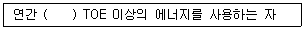
- 5000
- 10000
- 20000
- 50000
(정답률: 73%)
76. 난방부하가 18800kJ/h인 온수난방에서 쪽당 방열면적이 0.2m2인 방열기를 사용한다고 할 때 필요한 쪽수는?
- 30
- 40
- 50
- 60
(정답률: 53%)
77. 증기 사용 중 유의사항에 해당되지 않는 것은?
- 수면계 수위가 항상 상용수위가 되도록 한다.
- 과잉공기를 많게 하여 완전연소가 되도록 한다.
- 배기가스 온도가 갑자기 올라가는지를 확인한다.
- 일정압력을 유지할 수 있도록 연소량을 가감한다.
(정답률: 81%)
78. 보일러 파열사고의 원인과 가장 먼 것은?
- 안전장치 고장
- 저수위 운전
- 강도 부족
- 증기 누설
(정답률: 65%)
79. 보일러 분출작업시의 주의사항으로 틀린 것은?
- 분출작업은 2명 1개조로 분출한다.
- 저수위 이하로 분출한다.
- 분출 도중 다른 작업을 하지 않는다.
- 분출작업을 행할 때 2대의 보일러를 동시에 해서는 안 된다.
(정답률: 83%)
80. 보일러 수면계를 시험해야 하는 시기와 무관한 것은?
- 발생 증기를 송기할 때
- 수면계 유리의 교체 또는 보수 후
- 프라이밍, 포밍이 발생할 때
- 보일러 가동 직전
(정답률: 64%)